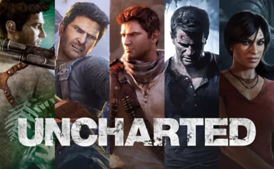

Titulos
A esta gran saga de aventura durante los años han sacado distintas colecciones de los juegos para las nuevas consolas y le producieron una pelicula.
-Uncharted 2: Among Thieves (2009): Es considerado el pico de la saga en premios, obteniendo más de 110 premios GOTY. Dominó los D.I.C.E. Awards con 10 galardones.
-Uncharted 4: A Thief's End (2016): Ganó el premio al Mejor Juego del Año en los BAFTA y sumó aproximadamente 190 premios GOTY en total.
-Nathan Drake
-Chloe Frazer (protagonista del último título: The Lost Legacy)
